Blog Note 4：面向 Galgamer 的日語學習路線
作者: 桐遠暮羽
不再被語言所束縛，這是成爲自由且無可阻擋的 Galgamer 之路。
| 資訊一覽 | |
|---|---|
| 攻略人數 | 1 |
| 時長 | 每天 1 到 2 課 |
| 類型 | 學園 文藝 |
| 畫面 | 全紙質 |
| 分級 | 全年齡 |
| 難度 | 中 |
寫在前面
爲甚麼要學習日語？我相信在看這篇文章的人都是 Galgame 玩家，
心裏也明白，好處自然是不言而喻。
你可以通過捕捉細微的語感，捕捉無法翻譯成其他語言的細微氣息，
感受到人物的細膩心理，還有撲面而來的和風（簡稱二次元味兒）。
那麼，要怎麼學習呢？報班？找新東方？
我覺得不行，找新東方的行爲很不 Galgamer，
而且一個班裏有些人進度快有些人進度慢，報班的最後結果就是上課不停摸魚或者根本跟不上進度。
從我之前接觸過的日語班的教學來看，老師會花兩到三次課講五十音圖。
我很奇怪這有甚麼好講的，發一本練習冊，一盤磁帶，讓學生滾回去嗯背一個星期，效果不更好？
最後那個班我全蹺掉了。
在我們開始之前…
要事先準備好一些東西。
多年餓次元文化的薰陶
多年諤次元文化的薰陶給你帶來了甚麼？你有沒有曾經覺得自己聽到動漫女孩一開口，似乎就已經從她的語氣和用詞猜到了她接下來要說甚麼，抱着甚麼樣的心情？
這些耳濡目染的經驗將成爲你語感的支柱，雖然好像沒完全聽懂，但是心裏卻感受到了；而且在學習的時候，你會覺得這些語法，這些詞彙，這些句子都似曾相識，整個學習的過程就好像自己的日語技能樹已經大概成形，剩下的只是把拼圖塊放進形狀剛好合適的空位裏，非常快樂。
這是不董二刺猿的人所不具有的高度優勢。
一本 五十音圖抄寫練習冊 或者 日語字帖
用來抄寫，跟讀，背誦，以便快速，牢固地記憶五十音。
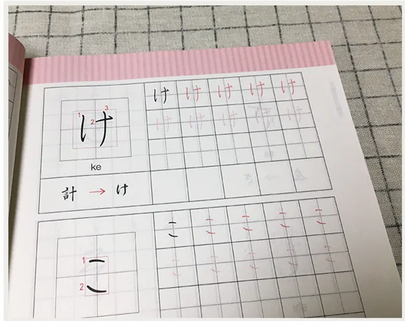
五十音是一切的基礎，待會還會細說。
新標準日本語教材（黃色書）的 初級 和 中級 部分，總共 4 冊。
用來成爲日語中級高手的必備教材。故事劇情以商業爲主，但是牠涵蓋了所有日常用語，所以還算好用。待會還會細說。
人教版的玩意，買二手，買盜版都可以，不怕良心不安。
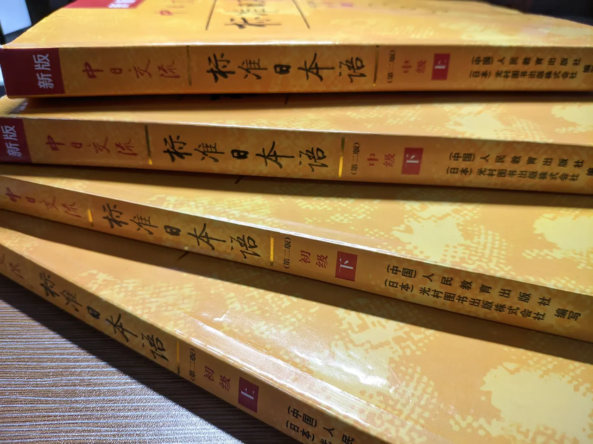
注意：請務必購買紙質書，不要使用電子書學習。買了，牠的存在就會不停地提醒你快點學習日語；而如果不買，你可能永遠都不會開始。
上述教材的配套音頻
用來聽寫，跟讀。點此下載 🔗️前往 Telegram 頻道
兩本 紙張可以方便地取出裝回的 活頁本
一本用來記錄你的筆記，一本用來做 新標準日本語教材 的課後習題。
一個 用語比較簡單的 Galgame 生肉
當你完成 初級 下冊 的學習之後會用到。
我推薦你玩 …
除了二次元薰陶之外，剩下的可以上淘寶買，或者造訪新華書城。
什麼？這些還不夠？
一些 日本語能力測試 的 備考練習
當你完成 中級 下冊 的學習之後會用到。
學習路線
讓我們開始吧！
首先，Galgamer 的日語學習路線和一般人的日語學習路線有甚麼區別呢？？
那就是，我們有 Galgame 這一有力武器（馬的智障），
各種 Galgame 的故事背景千奇百怪，劇本涉及世間萬物，遊玩需要閱讀大量文章，並且幾乎所有人物對話都有配音。
這意味着甚麼？
意思是，一旦你的日語學習達到了能大概讀懂 Galgame 的水平，聽力達到了能聽清楚對話中的每一個字的時候，那麼
Galgame 將成爲你的日語老師，你將可以從 Galgame 中繼續學到大量的原汁原味的表達，接觸到許多你沒見過的詞彙，語法乃至日本文化；你將逐漸熟悉各種日語會話中的語氣，遣詞造句。
你將被 Galgame 帶着前進，而不是繼續痛苦地在不知何時爲盡頭的道路上摸索。
目標
說到這裏，我覺得應該給自己設定一個甚麼目標，已經呼之欲出了。
第一步，先自己進行勤奮地自學，直到能夠大概讀懂 Galgame 劇情，雖然有生詞不是很懂，但是查查就沒問題。此時，已經對日語的整體架構和語法規則有了較好的掌握。(1m ~ 2m)
第二步，降低通過書本自學的強度，打開 Galgame 生肉，在遊戲中高強度練習閱讀和聽力，高強度積累新的詞彙和表達。你會發現能看懂的東西越來越多。(4m ~ 5m)
最後，扔掉課本，去挑戰複雜的 Galgame。
Stage 0 - 五十音圖（耗時 5d ~ 7d）
⚠️️五十音圖是一切的開始。
學習語言，如果連看懂它的字符都費勁，那無疑是事倍功半。
打開你的五十音圖練習冊（和配套的音頻如果有的話），一天十個符號，多多抄寫，多多朗讀，嗯背，直到——
你看到一句話，雖然意思不太清楚，卻能夠不假思索地讀出這一串假名。
- めんぼうをスティックにもちかえて、なんて♪
- そろそろエゴサタ～イム。「おんりーせんせいかみえし」だって！わかってるじゃない！
- ことり、かさねちゃんのところに…ばけてでちゃうんだから…
注意：片假名比較難背，你可以在精通了平假名而片假名還有點卡殼的情況下進入下一階段。
Stage 0.5 - 標準日本語 初級 上冊 入門單元
這一單元講了日語的一些發音、語調等基礎知識，你可以簡單看下，也可以聽聽入門單元的配套錄音。
不過我覺得深諳諤次元文化的你應該會覺得這些內容早已司空見慣。
Stage 1 - 標準日本語 初級 上冊 1~24 課 （每課耗時 1h~2h）
⚠️️你需要認真地學習每一課的內容。
上冊的每一課中都是固定的內容安排，請參照這裏
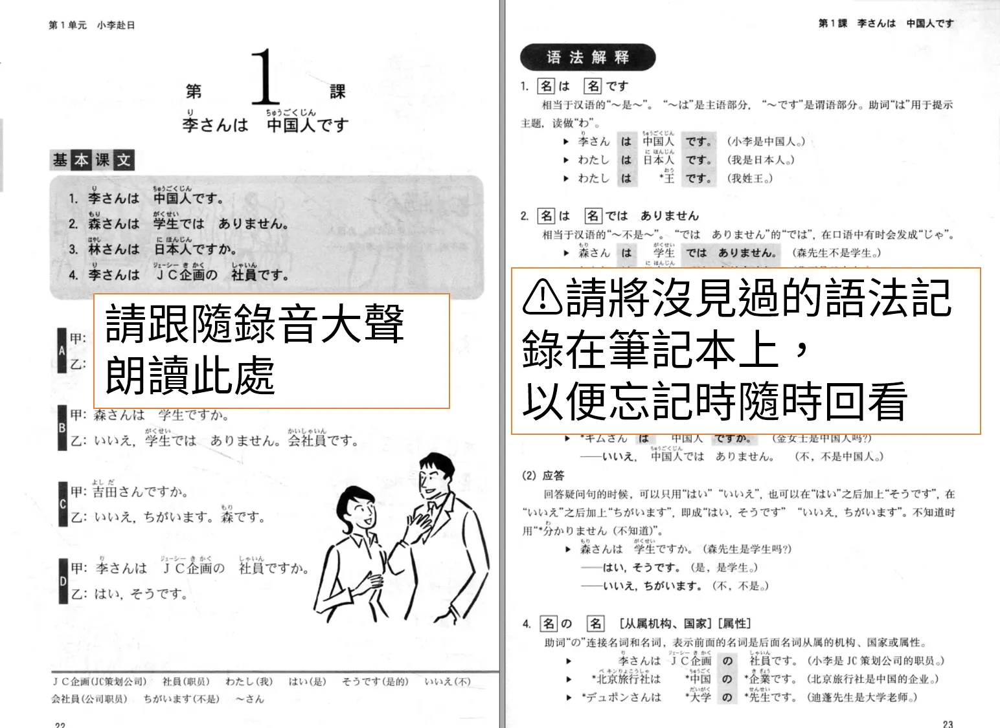
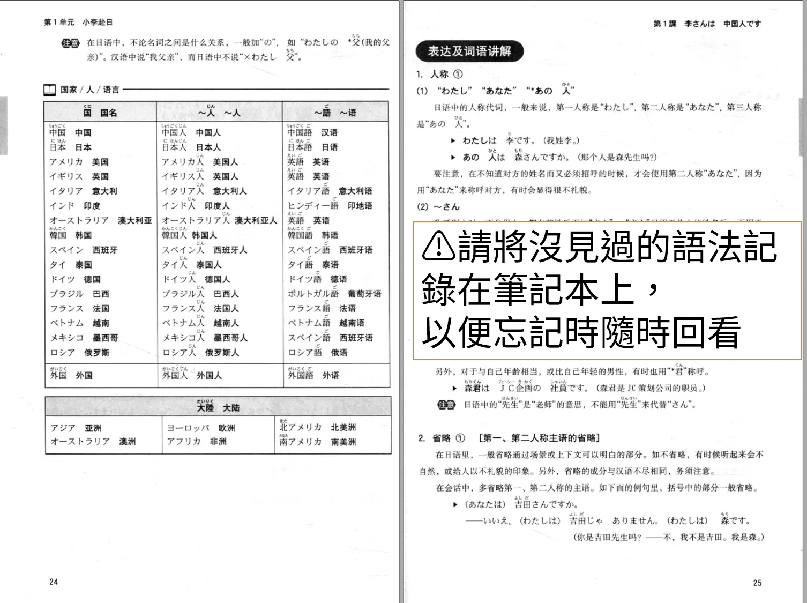
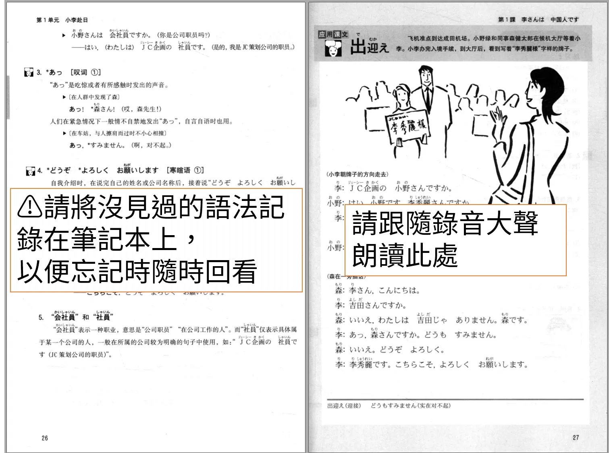
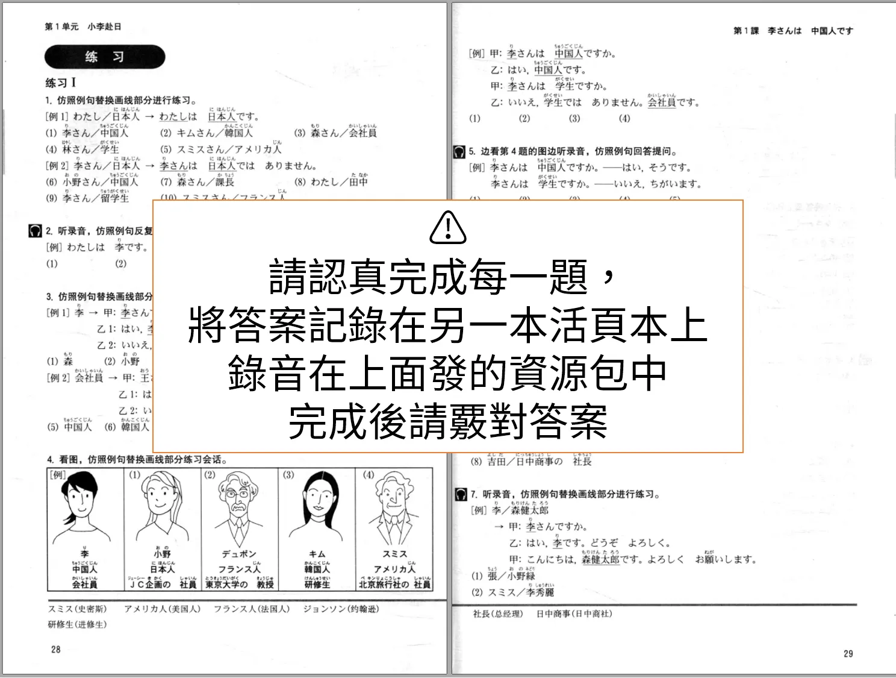
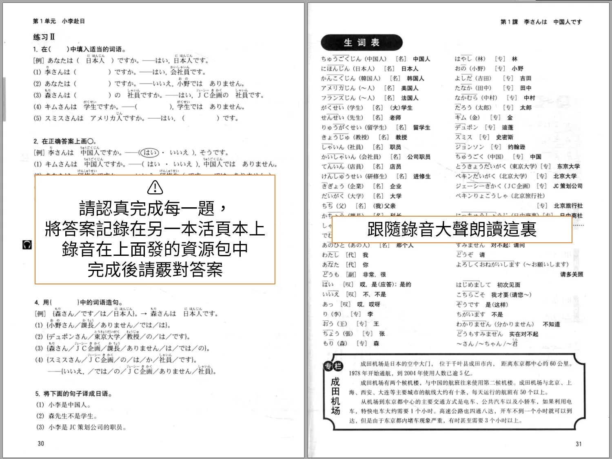
辛苦了，像這樣認真地完成每一課的內容需要一到兩個小時，上冊總共有 24 課。
你可以安排一天學習一課，並且在忘記內容時隨時翻看筆記，這樣一個月可以完成上冊。
但是！這是寒假！你難道不覺得應該進行一下大躍進嗎？？上午一課，下午一課，晚上玩玩 Galgame，豈不美哉！
但是如此高強度的學習會導致心累，所以我執行這個計劃的時候，每星期安排了一天的休息，啥也不做。這樣就可以半個月完成上冊。上冊的最後有一套 N5 考試題，請花一天時間完成牠，並仔細批改糾錯。
整個 新標準日語 初級 上冊 的知識點摘要 如下：
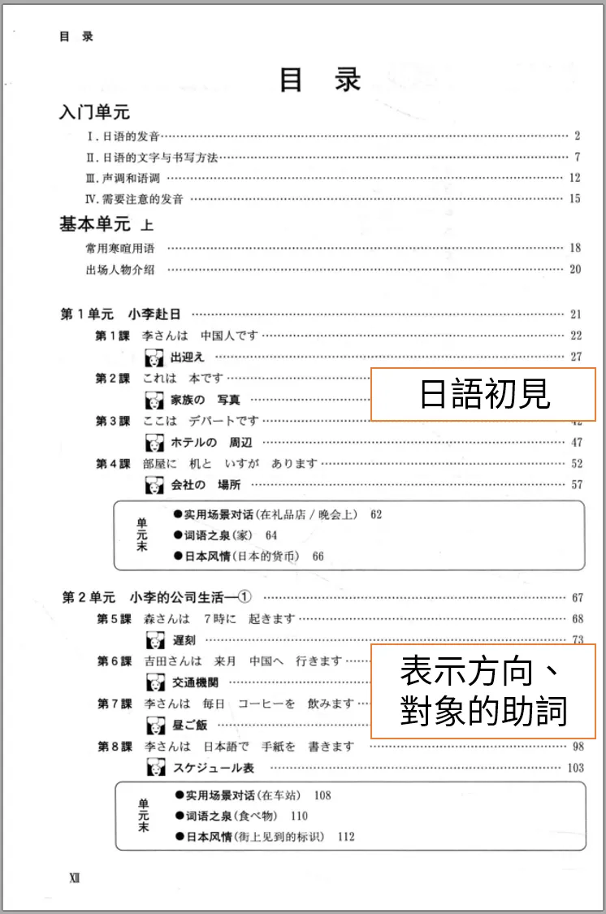
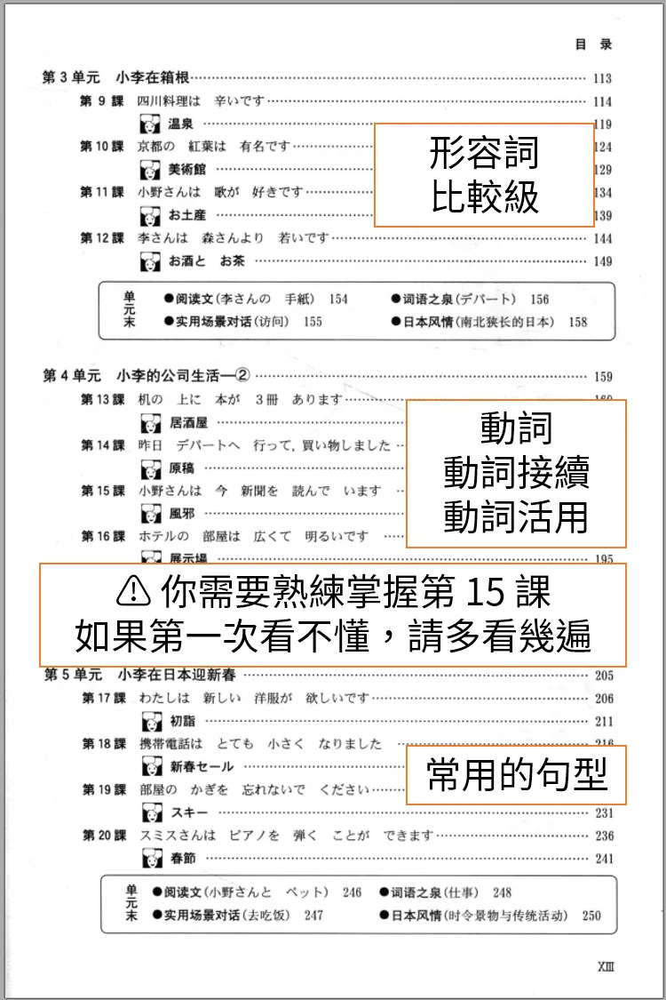
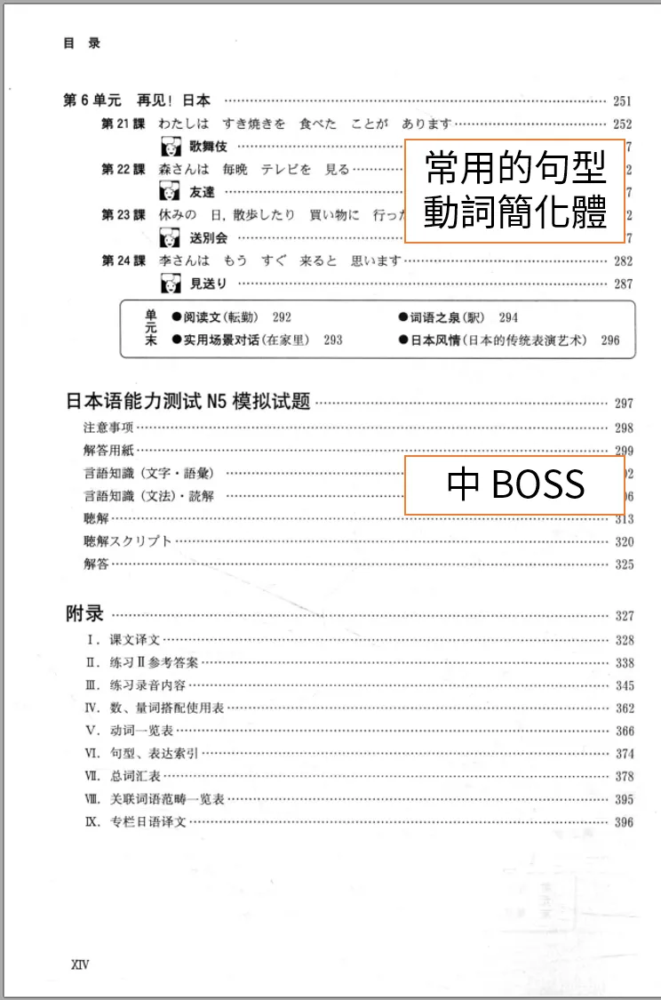
恭喜你完成了 初級 上冊，但是很遺憾，你還是無法看懂 Galgame。這裏還不是終點，只是檢查點。
Stage 2 - 標準日本語 初級 下冊 25~48 課 （每課耗時 1h~2h）
⚠️️你需要認真地學習每一課的內容。
下冊和上冊相比，結構上相差不大，還是適用上面提到過的學習方法。
一天兩課，沖阿！
整個 新標準日語 初級 下冊 的知識點摘要 如下：
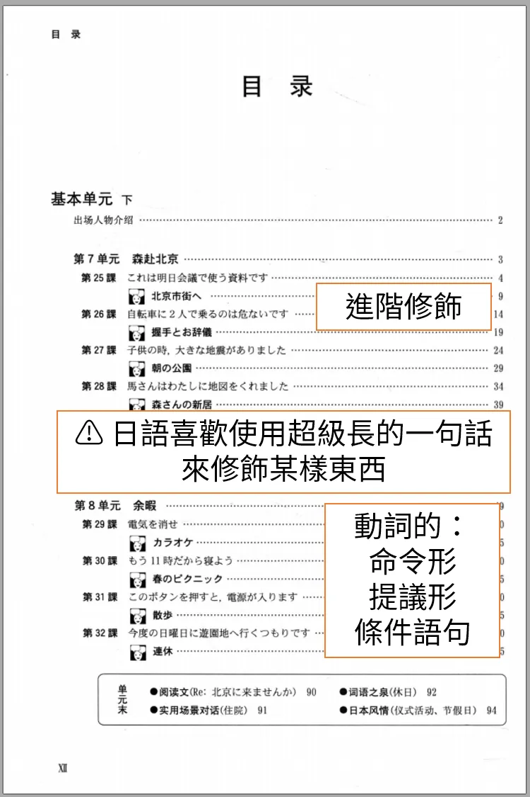
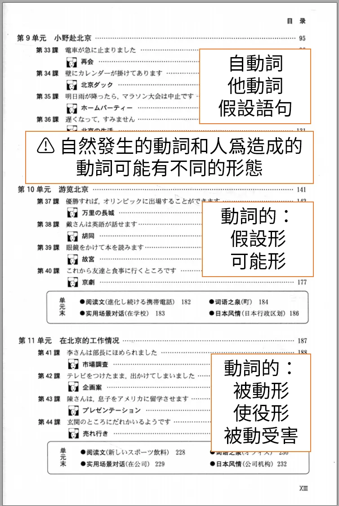
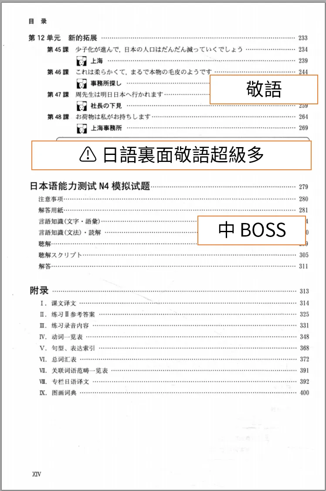
別忘了完成書末的 N4 考試題。
恭喜你，你已經幹爛所有日語初級課程，並且應該掌握了日語的大致語法框架，你會發現你可以讀懂一些生肉漫畫和一些 Galgame 了（大約 60%），你正在向日語中級高手的大門邁進。
雖然但是，這個階段還不能直接觀看動畫或者日劇，你會覺得他們說話超級快，還沒搞清楚他說的是哪個詞之前整句話都過去了，而且 Galgame 語音可能要多次播放才能聽清楚。
Stage 3 - 日語中級高手 養成階段 （中級課文 每課耗時 3h）
看到這裏就有讀者要罵人了。說好的 Galgamer 之路呢？前面都是叫人在當做題家，一點 Galgame 都沒提到！
我很抱歉，，，但是這是事實，在 Galgame 中學習就像是站在巨人的肩膀上，但是若是境界不到，你還無法夠到那巨人的肩膀。
你需要先成爲一個高手——至少是中級高手，才能到達能用 Galgame 學習的水平。
因此對初級日語的硬啃是必經之路。
但是你現在已經成功站在了這裏，你離中級高手已經很近了！請進入 日語中級高手 養成階段，，，
如果是電腦上的編程語言，只需要學習一次語法，接下來就能一勞永逸地讀懂所有代碼。
但是日語不是這樣的，學完初級日語的所有語法的框架，還不夠，在框架之外還有很多特殊情況，習慣用法等零散的東西。
中級日語的學習，就是對上述零散的表達方法的積累，就像在沙灘上撿貝殼🐚️，在這個階段多年的諤次元薰陶會再一次成爲你的好朋友。
中級日語課本就是這樣一本貝殼書，當然 Galgame 也一樣，因此在這個階段，我建議對着課本和 Galgame 生肉同時學習。
先來看一下中級日語的課本結構。中級的上下冊共有 32 課，其中每一課中是長這樣的。
有沒有感覺中級課文超級長？一節更比兩節長，花的時間也是成倍增加，這就是給中級高手的試煉，呵呵。
目錄和大綱沒有特別明顯的知識點框架（都是零散的貝殼），我就不放了。
終於到了玩 Galgame（學習）的時候了，那麼我就來講講該怎麼做，，，
爲了確保學習的效果，我們需要一個沒那麼多複雜用語，專有名詞，也不故弄玄虛的 Galgame，首先 🔗美好的每一天 就被排除了😅；然後，故事劇情應該貼近生活，主題是高中生活之類的最好，這樣日常用語的表達也能更好地熟悉，於是 🔗來自昏暗的時間盡頭 就不要玩了，，，
最後的結論就是，我覺得我們應該玩 🔗銀色、遙遠。（如果你有更好的選擇的話請告訴我）
在銀雪之地，北海道，和懷揣不同夢想的女孩子們 一起走向那夢想成真的遠方。
| 資訊一覽 | |
|---|---|
| 開發商 | tone work’s |
| 攻略人數 | 沒玩通所以不知道 |
| 遊戲時長 | 可能有 50 小時 |
| 類型 | 純愛 學園 青梅竹馬 妹妹 |
| 難度 | 中（生肉易懂程度） |
| 分級 | R-18（性行爲） |
遊戲本體
1 | |
文件名：銀色、遥か 初回版 + 予約特典 + Sofmap特典 + ボーカルソング + 認証回避
如果種子有問題，就上網找漢化版「銀色、遙遠」，然後遊玩裏面的日文版。
這個遊戲你將從初中開始陪伴女主角們，直到長大成人，去往遠方。所以日常用語肯定不會少，另外沒有陰間劇情，用詞肯定不會偏，而且語音語速適中容易聽懂，實在是適合練習的好材料。
劇中有加拿大人，所以她們故意講小兒科日語我會亂說？
遊玩的時候擺一隻手機在旁邊，打開谷歌，隨時準備查詢。
然後不要點太快，要聽清楚語音，快速掃一眼句子，嘗試對生詞進行猜測。
如果你無法讀懂一條句子，就使用手機查詢那個卡住你理解的生詞，一般谷歌搜索第一第二條都是日本 goo 或者 weblio 詞典的結果，點進去看日文解釋。
注意：嘗試用日文理解日文，不要直接使用谷歌翻譯。
你可以把搜索結果和學到的生詞發到自己的 Telegram 裏，作爲生詞本。
合理安排時間，不要玩太久，一開始玩生肉容易疲憊，累了就趕緊關機，以免出現厭學情緒。
綜合上面的 日語中級教材 和 Galgame 生肉，確實地，腳踏實地地加油吧！
你可以嘗試兩天完成中級教材的一課，也就是一天完成一半，然後晚上稍微玩一下 Galgame。
Stage 3.5 - 問與答：中級自學高手 FAQ
Q: 學完了初級下冊，準備開始 Stage 3 的時候，寒假結束了，怎麼辦！
A: 把日語和 Galgame 帶到學校去，繼續你的計劃！大方地，在衆人面前，朗讀你的新標日課文，單詞！遊玩你的 Galgame 生肉！
Q: 寒假結束了，我還沒有完成初級下冊！怎麼辦！
A: 沒完成初級下冊不代表甚麼，每個人效率不一樣，只要你能在寒假搞定上冊，下冊開了個頭，我就不會罵你摸魚。
Q: 我是上班族，我該如何安排時間？
A: 和學生不一樣，會遇到沒有寒假的困難，但是，你應該可以在下班之後完成一課的初級課文。完不成也不要緊，可以花兩天的時間來完成一篇初級課文，第一天通讀全文，把沒見過的語法作筆記；第二天完成所有課後習題並複習語法和生詞。
如果你完成了所有初級課程，我敬佩你。接下來你可以嘗試花四天的時間完成一篇中級課文，並且每天玩二十分鐘的 Galgame 生肉。
進度慢不要緊，最重要的是不要中斷，你可以嘗試在 Galgame 交流群打卡。
Q: 請告訴我背單詞的方法！
A: 不需要拘泥於太生僻的單詞，在通讀每一課的課文的時候，你會自然地記住常見的單詞！你可以用紅筆標記你覺得重要的單詞，或者發到自己的 Telegram 生詞本。
Q: 我還在猶豫要不要執行這些計劃！
Q: 我累了！我不想玩生肉了！玩生肉好累，不如漢化！
A: 不再被語言所束縛，這是成爲自由且無可阻擋的 Galgamer 之路。
Q: 你的計劃是在共三小！
Q: 你在騙錢！
A: 😅
Q: 學日語只是爲了玩 Galgame，是殺雞用牛刀，大材小用！
A: 開始學日語可能只是因爲一個微不足道的理由，但是腳踏實地地堅持，你還可以做成其他偉大的事情。
Q: 請告訴我關於 JLPT 日本語能力測試的事情！
A: 你將在完成 Stage 4 的學習之後達到 N2 水平。之後你可以一邊使用備考練習（比如那本考前對策，考試真題）和 Galgame 生肉進行備考。
JLPT 考試在 7 月和 12 月舉行，報名時間是 3 月中旬和 8 月中旬，具體按照 🔗教育部考試中心 的網站通知。
注意：中國考區經常以“疫情”原因取消 JLPT 的考場，導致考位經常稀缺，報名時請不要猶豫，1 秒鐘可能就被搶光。具體搶號方法請多關注網上的帖子和新聞。
有了一個 JLPT 作爲目標，你也會更加勤勤懇懇地執行這些計劃吧。
Stage 4 - 日語高手：中級摘帽計劃 （下冊中級課文 每課耗時 3h）
歡迎你，日語中級高手，你的日語水平正在漸入佳境，你可以輕鬆理解 Galgame 故事，輕鬆揣摩女主心情，但是離流暢 Galgame 還差一點點距離，面對長篇大論的複雜設定還是有點侷促。
沒甚麼好說的，繼續 Stage 3 的做法，積累新表達，你可以一邊遊玩你喜歡的 Galgame 名作，一邊完成 中級課本 下冊 的學習。
每次回顧，都能看到筆記本越來越厚，裏面的貝殼越來越多，Telegram 生詞本裏面拉出的清單越來越長。
中級下冊課本的結構和上冊一樣，學習方法也相同，就不再放圖了。
課文結束後，請完成書附的 N2 模擬題（大 Boss）。
Stage 5 - 無可阻擋的 Galgamer（耗時 ♾️）
回過神來，你已經站上了巨人的肩膀，Galgame 正帶着你前進。
見過了幾乎所有的語法和表達，唯一的障礙就是時不時零星冒出的生詞。
Galgame 玩的越多，在你背後堆成的貝殼之山就越高，
只要你不停止玩 Galgame，你就永遠不會忘記學過的日語。
作爲最後的練習，我推薦你玩 🔗在月之彼方再相逢。
旅程在這裏結束了嗎？
開始學日語可能只是因爲一個微不足道的理由，但是腳踏實地地堅持，你還可以做成其他偉大的事情，追尋喜歡的東西，旅程才剛剛開始。
寫在最後
本文已經很長了，謝謝你能看到這裏。
如果你也是 Galgamer，我很樂意和你討論 Galgame 和日語學習；
但是如果你是批小將、紅衛兵，或者是站在自由、開放價值觀的對立面的人，
或者是沒把仇日的出廠設置洗掉，認爲學日語是“師夷長技以制夷”的人，
你學個🔨日語，玩個🔨 Galgame，請你立刻滾蛋，，，
对于原创内容，文章作者保留所有权利。转载需要许可，如有需要请前往 🔗️Galgame 频道 留言。
另外，复制链接自由，请随意分享。